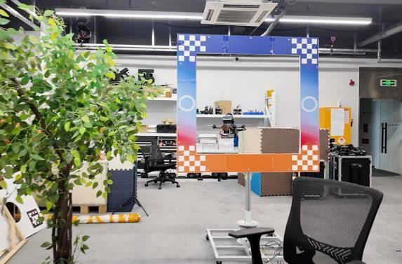
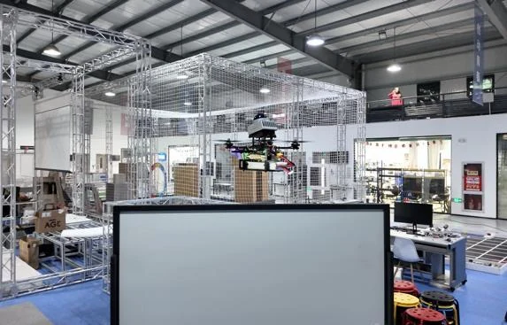
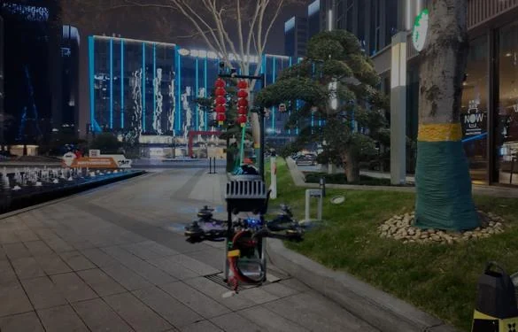
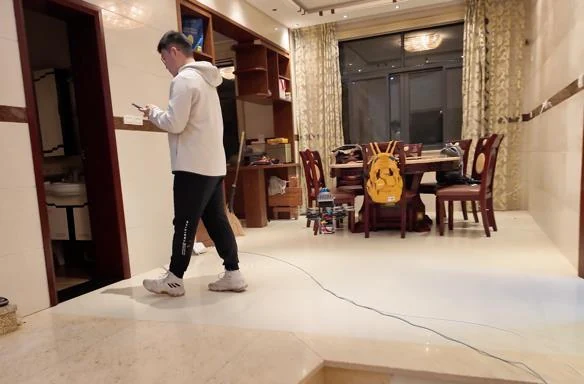
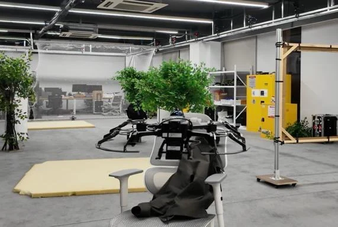
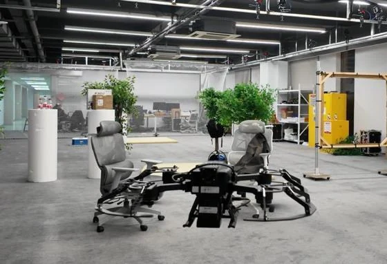
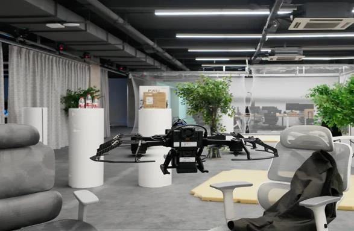
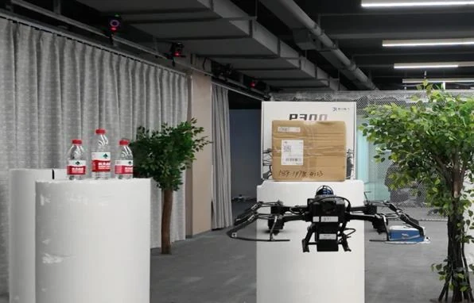

Overview
VLN-AR enables aerial robots to follow natural-language instructions using onboard cameras and computation. A vision-language model identifies the next goal, a memory module tracks progress through multi-step instructions, and a lightweight planner converts each goal into a feasible flight path. We train the model in three stages using photorealistic scenes reconstructed with 3D Gaussian Splatting. We evaluate VLN-AR in simulation and on two aerial robots navigating indoor and outdoor environments.
Video Highlights
Flight highlights
Outdoor navigation (6×), indoor navigation (4×), a long-horizon task (8×), and target tracking (3×).
Indoor navigation
The robot follows instructions using object descriptions and spatial relations. Flights are shown at 4× and 8× speed.
Outdoor navigation and tracking
Landmark navigation at 6×, additional outdoor trials at 5×, and target tracking at 3×.
Long-horizon navigation and robustness
A multi-step navigation task at 8×, followed by robustness tests at 3×.
Project Overview
An overview of data collection, model training, and deployment on the aircraft.
Results
- Real-world navigation
- 90.1%
- 91 of 101 flight trials completed across two aircraft.
- Long-horizon navigation
- 88.0%
- Multi-step task success with the navigation agent, up from 57.4% without it. Table VI
Real-world robustness
Successful flights out of 20 trials per condition, with no additional fine-tuning. Table IV · Figure 11

Suspended obstacles18/20
Height changes >5 m19/20
Low light at night17/20
Moving obstacles17/20
Unseen scenes18/20
Example flight in an unseen office



Closed-loop simulation
| Evaluation set | Success rate | Navigation error | Trajectory time |
|---|---|---|---|
| AerialVLN | 78.15% | 22.12 m | 41.51 s |
| OpenFly | 76.88% | 23.22 m | 40.07 s |
| Held-out indoor scenes | 92.66% | 5.75 m | 16.18 s |
Trajectory time is averaged over successful trials. Table II
Method

The vision-language model combines the instruction with current and past camera views to predict a target pose and decide when to replan or finish a task. For longer instructions, a navigation agent keeps a record of completed subtasks. The action expert uses the predicted goal and a depth image to plan a dynamically feasible trajectory.
Two supervised training stages teach visual grounding and navigation using a mixture of aerial navigation and vision-language data. Reinforcement learning in closed-loop simulation then refines the model’s decisions. At deployment, instruction-guided visual token selection reduces the computation required on the aircraft.
Citation
@ARTICLE{11803153,
author={Wu, Yuze and Zhu, Mo and Li, Xingxing and Du, Yuheng and Wang, Zhaoqi and Fan, Yuxin and Li, Wenjun and Hoi, Kenghou and Han, Zhichao and Zhou, Xin and Gao, Fei},
journal={IEEE Transactions on Robotics},
title={A Hierarchical Onboard Vision-Language-Navigation Framework for Aerial Robots in Complex Environments},
year={2026},
volume={},
number={},
pages={1-20},
keywords={Modeling;Navigation;Autonomous aerial vehicles;Cognition;Cognitive systems;Optimization;Training;Educational institutions;Trajectory;Argon;Aerial system;Autonomous navigation;Foundation model;Onboard Deployment},
doi={10.1109/TRO.2026.3754505}}